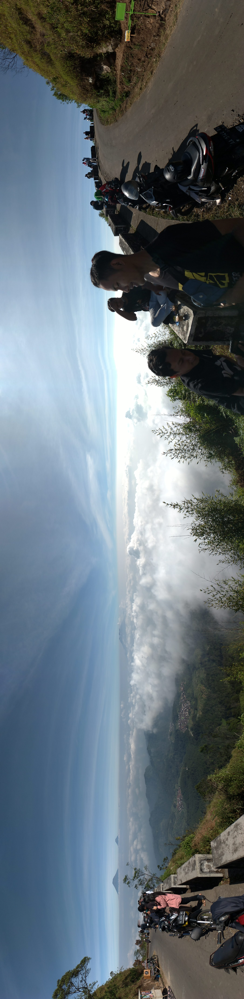
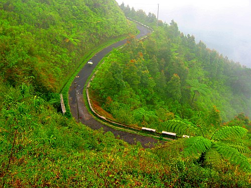
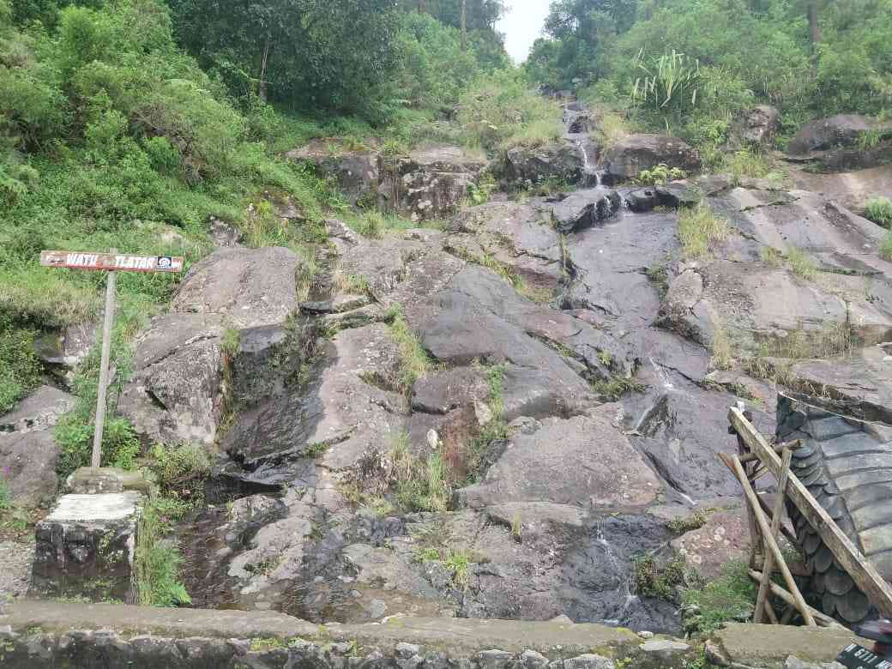
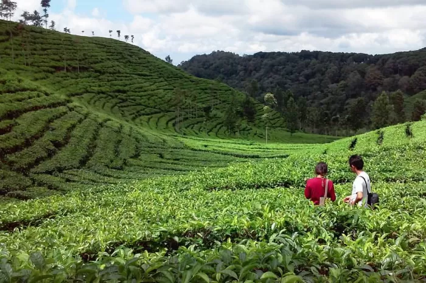

Tentang Wisata Puncak Gunung Telomoyo

Gunung Telomoyo, yang terletak di Jawa Tengah, Indonesia, menawarkan
pengalaman wisata alam yang menakjubkan bagi para pencinta
petualangan dan keindahan alam. Dengan ketinggian sekitar 1.996
meter di atas permukaan laut, gunung ini menyajikan pemandangan
spektakuler dari puncaknya, memperbolehkan para pendaki menikmati
panorama yang luas, termasuk Kota Semarang dan pegunungan
sekitarnya. Selain itu, jalur pendakian yang beragam memberikan
kesempatan bagi para pendaki, mulai dari pemula hingga yang
berpengalaman. Di sepanjang perjalanan, pengunjung dapat menikmati
keindahan alam, hutan pinus yang rindang, serta udara segar yang
menyegarkan. Puncak Telomoyo juga merupakan tempat yang ideal untuk
menyaksikan matahari terbit atau terbenam, menciptakan momen
berkesan selama petualangan di gunung ini.

Proses pendakian menuju puncak Gunung Telomoyo menjanjikan
petualangan yang mengesankan, diawali dengan udara segar dan
hamparan kebun teh yang menyambut pengunjung. Pendakian ini
menawarkan berbagai rute, mulai dari jalur yang ramah untuk pemula
hingga jalur yang menantang bagi pendaki berpengalaman. Setapak
demi setapak, pendaki akan melewati hutan pinus yang rindang dan
berbagai jenis vegetasi alami, sementara aroma segar tanah dan
dedaunan menyertai perjalanan. Saat mendaki, pengunjung akan
dihadapkan pada pemandangan indah dan geologi yang menakjubkan.
Rintangan alam seperti sungai kecil, bebatuan, dan tanjakan curam
menjadi bagian tak terpisahkan dari petualangan, menciptakan
pengalaman yang menguji keberanian dan ketahanan. Setelah melewati
perjalanan yang menantang, langit-langit biru puncak Gunung
Telomoyo akan menyambut pendaki dengan panorama spektakuler yang
membayar semua usaha. Pemandangan Kota Semarang dan pegunungan
sekitarnya akan membelai mata, sementara udara segar dan heningnya
puncak menciptakan momen yang tak terlupakan bagi para pendaki.
Objek Wisata
Wisata Puncak Gunung Telomoyo tidak hanya memiliki objek wisata
seperti jalur pendakian, namun terdapat objek wisata lainnya yang
harus dinikmati oleh pengunjung dan para pendaki.
Batu Cinta Telomoyo

Salah satu objek wisata menarik di Gunung Telomoyo adalah "Batu
Cinta Telomoyo". Terletak di puncak gunung, Batu Cinta Telomoyo
menjadi daya tarik utama karena dianggap sebagai simbol
keberuntungan dan kebahagiaan bagi para pengunjung. Batu tersebut
memiliki legenda lokal yang mengatakan bahwa sentuhan atau doa
yang diberikan pada Batu Cinta dapat membawa keberuntungan dalam
percintaan dan kehidupan sehari-hari. Selain itu, lokasi ini juga
menawarkan pemandangan indah dan atmosfer yang romantis,
menjadikannya tempat yang ideal untuk berfoto bersama atau sekadar
menikmati keindahan alam sekitar. Wisatawan seringkali mendaki
gunung dengan tujuan khusus untuk mencapai Batu Cinta Telomoyo dan
merasakan aura mistis serta keindahan alam yang memukau di
ketinggian tersebut.
Kebun Teh Kemuning

Selain Batu Cinta Telomoyo, Gunung Telomoyo juga menawarkan objek
wisata lain yang menarik, seperti "Kebun Teh Kemuning". Terletak
di lereng gunung, kebun teh ini memberikan pengalaman menyegarkan
dengan hamparan perkebunan teh yang hijau dan pemandangan alam
yang menakjubkan. Pengunjung dapat menikmati jalan-jalan santai di
antara tanaman teh yang tertata rapi, sambil menikmati udara segar
pegunungan. Di sini, terdapat fasilitas untuk tur keliling kebun
teh, di mana wisatawan dapat belajar tentang proses pengolahan teh
dan mencicipi berbagai jenis teh lokal. Kebun Teh Kemuning menjadi
destinasi yang cocok bagi pecinta alam dan penggemar teh,
menawarkan pengalaman yang unik di tengah keindahan alam Gunung
Telomoyo.
Harga
Harga untuk wisata Gunung Telomoyo dapat bervariasi tergantung pada
berbagai faktor seperti jenis kegiatan, fasilitas yang disediakan,
dan pilihan paket wisata. Berikut adalah perkiraan harga untuk
beberapa kegiatan umum di Gunung Telomoyo:
Pendakian:
-
Paket pendakian untuk pemula: Mulai dari
Rp 150.000 hingga
Rp 300.000 per orang.
-
Paket pendakian untuk pendaki berpengalaman: Mulai dari
Rp 300.000 hingga
Rp 500.000 per orang.
Tur Kebun Teh Kemuning:
-
Tiket masuk dan tur: Mulai dari Rp
50.000 hingga Rp 100.000 per
orang.
Paket Wisata Batu Cinta:
-
Paket wisata termasuk pendakian dan kunjungan ke Batu Cinta:
Mulai dari Rp 250.000 hingga
Rp 400.000 per orang.
Harap dicatat bahwa harga tersebut hanya perkiraan dan dapat berubah
tergantung pada kebijakan pengelola lokasi wisata dan operator tur.
Selalu disarankan untuk memeriksa informasi terbaru dan melakukan
reservasi sebelumnya untuk mendapatkan harga yang akurat dan
memastikan ketersediaan.